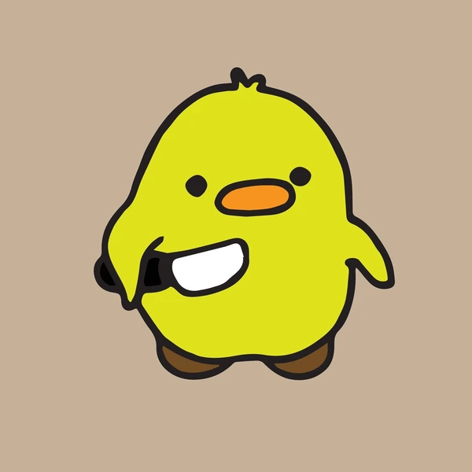

Whatever you were looking for is gone. Deleted. Erased. Suspiciously replaced with nothing.
Either the URL is wrong, or this page has been quietly removed and no one is talking about it. Especially not the duck.